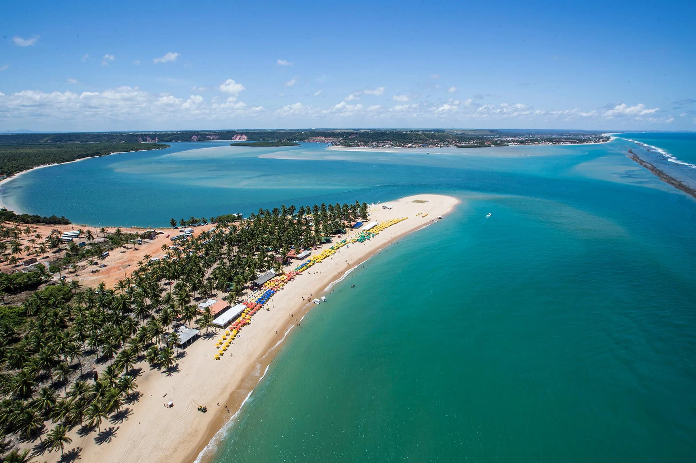
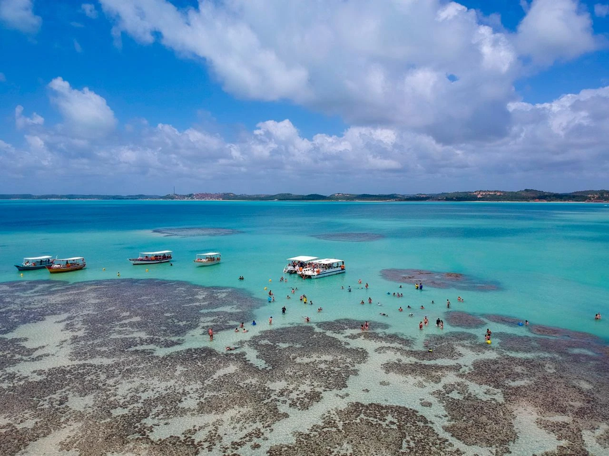
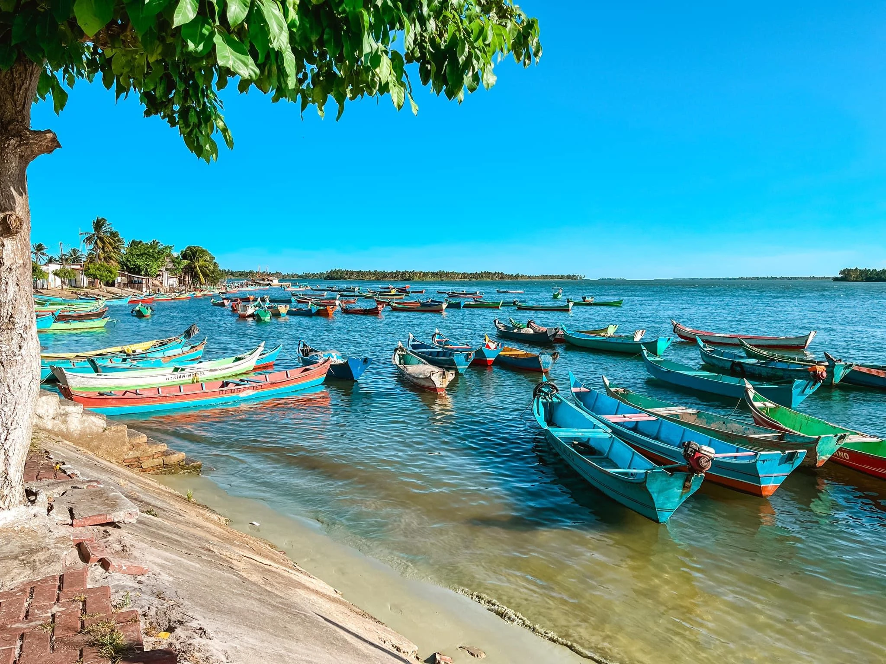
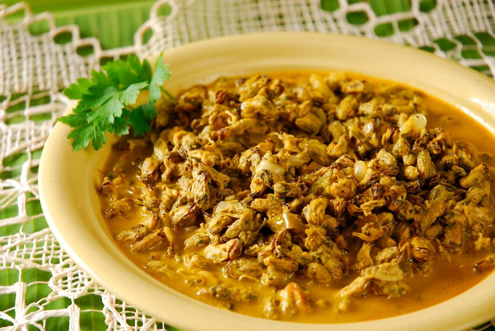
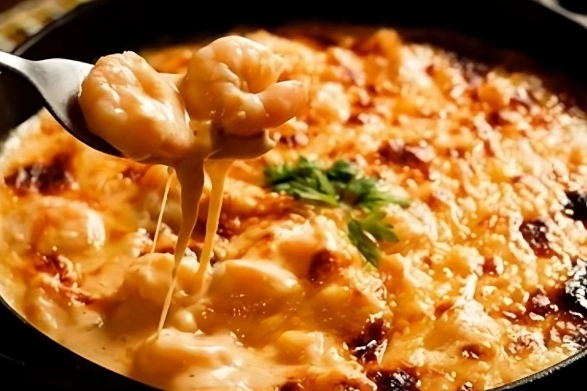
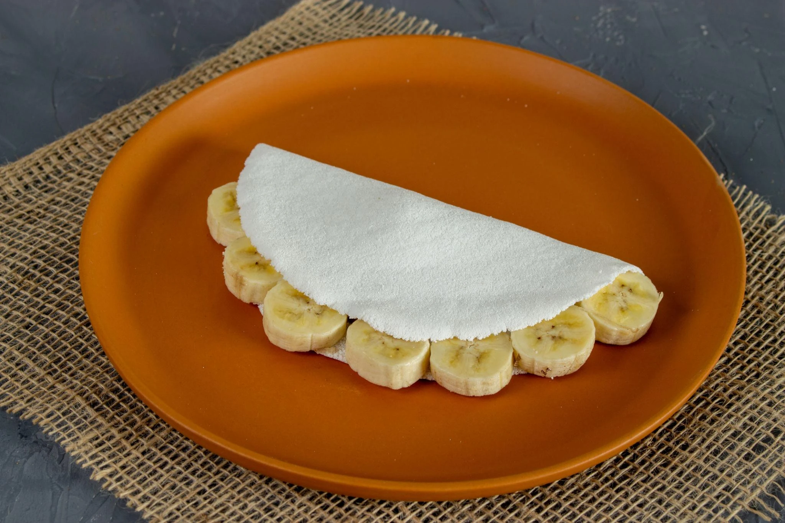

Capital
Maceió
Conheça destinos, culturas, sabores e paisagens de todas as regiões
brasileiras.
Destinos, culturas e paisagens
incríveis te esperam.
Alagoas é um estado localizado na Região Nordeste do Brasil, conhecido por suas praias paradisíacas, águas cristalinas, piscinas naturais e rica herança cultural. Com um dos litorais mais bonitos do país, o estado atrai turistas em busca de paisagens naturais, gastronomia baseada em frutos do mar e manifestações culturais tradicionais. Além das praias, Alagoas possui lagoas, rios e cidades históricas que ajudam a contar a história da colonização brasileira.

Maceió
Aproximadamente 27.848 km²
Cerca de 3,3 milhões de habitantes
Nordeste

Localizada no município de Roteiro, a Praia do Gunga é considerada uma das mais belas do Brasil. O local é famoso por suas falésias coloridas, coqueirais e águas cristalinas.

Maragogi é conhecida como o "Caribe Brasileiro". Suas piscinas naturais, chamadas de galés, possuem águas transparentes que permitem a observação de peixes e corais.

Na divisa entre Alagoas e Sergipe, a Foz do Rio São Francisco oferece um espetáculo natural onde as águas do rio encontram o Oceano Atlântico. Os passeios de barco são uma das principais atrações.

Prato tradicional preparado com sururu, um molusco muito encontrado nas lagoas alagoanas. É cozido com leite de coco e temperos regionais, resultando em um sabor marcante.

Receita típica feita com camarão, queijo e molho cremoso. O nome vem da textura puxenta proporcionada pelo queijo derretido.

Muito popular em todo o Nordeste, a tapioca é preparada com goma de mandioca e pode receber recheios doces ou salgados, sendo uma das marcas da culinária regional.
Alagoas possui clima tropical, com temperaturas elevadas durante praticamente todo o ano. A melhor época para visitar é durante os meses mais secos, quando o mar apresenta águas ainda mais cristalinas.
Alagoas possui clima tropical, com temperaturas elevadas durante praticamente todo o ano. A melhor época para visitar é durante os meses mais secos, quando o mar apresenta águas ainda mais cristalinas.
O litoral norte é a região mais procurada pelos turistas, especialmente Maragogi e suas piscinas naturais. Já o litoral sul oferece praias igualmente belas e menos movimentadas.
O litoral norte é a região mais procurada pelos turistas, especialmente Maragogi e suas piscinas naturais. Já o litoral sul oferece praias igualmente belas e menos movimentadas.
A culinária alagoana é fortemente baseada em frutos do mar, leite de coco e ingredientes regionais. Experimentar pratos típicos à beira-mar é uma das melhores formas de conhecer a cultura local.
A culinária alagoana é fortemente baseada em frutos do mar, leite de coco e ingredientes regionais. Experimentar pratos típicos à beira-mar é uma das melhores formas de conhecer a cultura local.